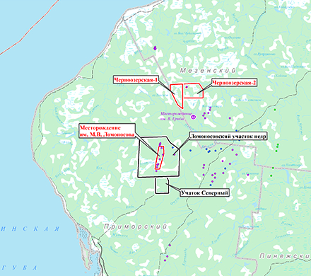
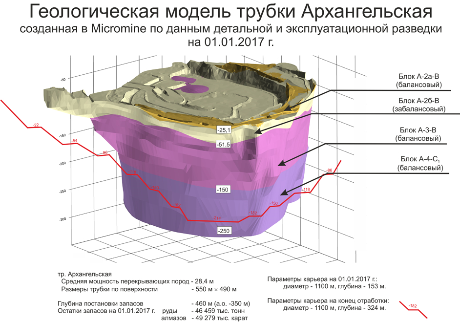
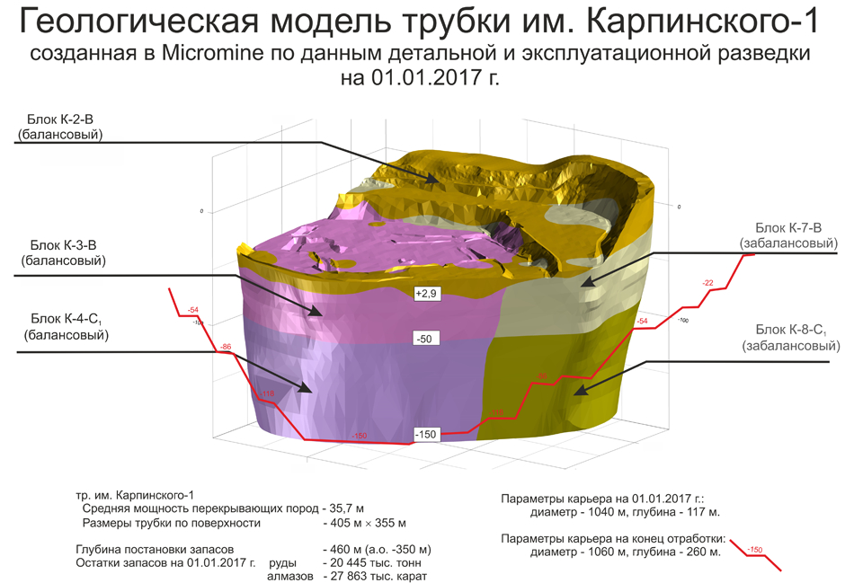

Ведутся масштабные геологоразведовательные
работы
Минерально-сырьевая база

Характеристика месторождения алмазов им. М.В. Ломоносова
Месторождение алмазов им. М.В. Ломоносова расположено в Архангельской области России в 100 км от г. Архангельска.
Географически находится на севере Русской равнины на Беломорско-Кулойского плато с абсолютными отметками 120-260 м.
Балансовые запасы месторождения
алмазов им. М.В. Ломоносова
алмазов им. М.В. Ломоносова
по данным ГКЗ на 01.01.2017
283 676
тыс. тонн
запасы руды
1,239
карат / тонн
среднее содержание
166 686
тыс. карат
запасы алмазов
История открытия
Открытию уникального месторождения предшествовало вскрытие скважиной на Онежском п-ве в 1936 г. брекчиевидных пород, диагностированных Н. Ф. Кольцовым как субвулканические образования (сейчас это трубка Лывозеро).
Следующим важным этапом в решении проблемы алмазоносности севера Европейской части России явились результаты геологосъемочных работ на Беломорско-Кулойском плато, когда в 1975 г. на р. Мела были обнаружены силлы кимберлитов, а позднее в 1978 году в аллювии р. Падун были найдены 2 кристалла алмазов. Полученные результаты послужили основанием для постановки в 1979-1980 годах аэромагнитной съемки, по итогам которой в марте 1980 года на аномалии 24а буровой установкой Юрасской экспедиции ПГО «Архангельскгеология» скважиной № 289 была вскрыта первая алмазоносная кимберлитовая трубка Поморская.
В дальнейшем последовали открытия остальных трубок месторождения:
- Поморская - март 1980 года
- им. Ломоносова - октябрь 1981 года
- им. Карпинского-1 - март 1982 года
- им. Карпинского-2 - май 1982 года
- Пионерская - май 1983 года
- Архангельская - сентябрь 1983 года.
Первооткрыватели месторождения
За открытие, ускоренную разведку и подготовку к эксплуатации месторождения министерством геологии СССР было присуждено звание «Первооткрыватель месторождения»: А.Ф. Станковскому, Е.М. Веричеву, В.К. Соболеву, В.П. Грибу, И.П. Добейко, В.С. Фортыгину, Г.А. Георгиеву, С.П. Александрову, В.А. Ларченко (ПГО «Архангельскгеология»); В.А. Медведеву и В.А. Лютикову (ГРЭ 17 ПГО «Невскгеология»); Г.З. Гриневицкому, А.В. Ефимову и Г.М. Левину (ПГО «Севзапгеология»); Р.С. Контаровичу (НПГО «Аэрогеология»).
А.Ф. Станковский
Ю.Г. Константинов
В.К. Соболев
С.П. Александров
В.П. Гриб
И.П. Добейко
В.А. Малов
В.А. Котельников
В.С. Фортыгин
Е.М. Веричев
В.А. Ларченко
В.А. Медведев
Геологическое строение месторождения
В состав месторождения им. М.В. Ломоносова входят 6 из 10 сближенных трубок Золотицкого кимберлитового поля. Расстояние между крайними из них – тр. Архангельская и им. Ломоносова – составляет 9,5 км, а между отдельными кимберлитовыми телами внутри этой цепочки – от 0,13 до 2,14 км, в среднем – 1,26 км.
Геологический возраст месторождения поздний девон-ранний карбон, т.е. примерно составляет 360 млн. лет.
Вмещающие породы представлены 920-метровой толщей вендских отложений (песчаники с прослоями алевролитов и аргиллитов). Комплекс перекрывающих пород представлен отложениями среднекаменноугольного (песчаники с редкими маломощными прослоями алевролитов, реже - известняков и гравелитов) и четвертичного (пески, суглинки, галечники, супеси и торфа) возраста, общая мощность которых возрастает с юга на север от 28,4 до 54,5 метров.
По форме в кимберлитовые трубки месторождения им. Ломоносова делятся на две основные морфологические группы:

- трубки с относительно правильными, округлыми или овальными очертаниями (им. Ломоносова, им. Карпинского-1 и Архангельская);
- трубки с неправильными линзовидно-овальными контурами, осложненными пережимами в центральной части (им. Карпинского-2 и Пионерская) или на одном из флангов (Поморская), придающими им гантелеобразный вид.
В вертикальном разрезе кимберлитовые тела имеют форму типичной воронки взрыва, нередко увенчанной в верхней части раструбом. У части трубок в вертикальном разрезе присутствуют кратерная и жерловая части, выполненные разними типами кимберлитовых пород, которые существенно отличаются по алмазоносности и физико-механическим параметрам.
По своим размерам кимберлитовые тела месторождения им. Ломоносова по действующей в России классификации относятся к категории крупных и весьма крупных (трубка Пионерская), исключение составляет трубка Поморская, относящаяся к категории средних.
Согласно Классификации запасов месторождений и прогнозных ресурсов твердых полезных ископаемых (алмазы) МПР России, все кимберлитовые тела по сложности геологического строения относятся к 2-й группе.
Характеристика алмазов месторождения им. М.В. Ломоносова
Алмазы, добываемые из разных месторождений мира неодинаковы. Алмазы каждого месторождения обладают уникальным набором параметров, которые позволяют специалистам с большой долей вероятности идентифицировать принадлежность сырья к определенному месторождению. Алмазы, добываемые на месторождении им. М.В. Ломоносова имеют следующие особенности.
Форма Как и в любом месторождении алмазов подавляющая часть алмазов представлена монокристаллами, но также присутствуют двойники и сростки, образованные несколькими кристаллами. В отличие от наиболее характерной для большинства месторождений мира формы алмаза – октаэдра, в отрабатываемых трубках месторождения им. М.В. Ломоносова преобладают округлые ромбододекаэдры (ромбододекаэдр - двенадцатигранник, каждая грань которого является ромбом). Реже встречаются октаэдры, кубы и всевозможные переходные разновидности между ними.
Размер Основная масса алмазов, добываемых в мире, представлена кристаллами величина которых измеряется первыми миллиметрами. Месторождение алмазов им. М.В. Ломоносова подчиняется общей тенденции – основная масса алмазов, добываемых на месторождении, имеет размеры от 2 до 4 мм. Крупные кристаллы (весом более 5 карат и размером более 8 мм) составляют чуть больше 1% от массы всех алмазов. Минимальный размер алмазов, добываемых на обогатительной фабрике Ломоносовского ГОКа, составляет 1,4 мм (дополнительно получаются алмазы до 0,5 мм). Самый крупный алмаз добытый на месторождении массой 106,64 карата имел размеры по вершинам 20.9*21.5*19.7 мм.
Цвет Цвет алмазов изменяется в широких пределах и имеет большое значение при оценке ювелирных разновидностей. При этом кристаллы алмазов одного цвета могут иметь разную интенсивность окраски, что также является классификационным признаком. Большая часть алмазов месторождения бесцветные и с незначительным нацветом. Среди окрашенных имеются кристаллы серого, желтого, дымчато-коричневого, зеленого, розового и фиолетового цветов.
Включения Наибольшую ценность имеют алмазы свободные от каких любо внутренних включений, трещин и пузырьков газа, что обеспечивает получение бриллиантов высшего качества и наибольшего размера. При этом включения в алмазах достаточно распространены. К основным включениям можно отнести включения графита и сульфидов, реже встречаются включения минералов спутников алмазов: граната, хромшпинелида, пикроильменита и оливина. Кроме выше названных встречаются включения алмазов в алмазе.
Качество Все вышеперечисленные морфологические особенности отражают в конечном счете находят свое отражение в стоимостной оценке алмазов. По результатам работ по сортировке алмазов по вышеперечисленным признакам все сырье оценивается по прейскуранту, утвержденному Министерством финансов России, включающему более 6 тыс. позиций.
Минерально-сырьевая база
На балансе ПАО «Севералмаз» числится 12 месторождений общераспространенных полезных ископаемых. Месторождения расположены на разной удаленности от действующего Ломоносовского горно-обогатительного комбината и призваны обеспечивать текущие потребности ГОКа в строительных материалах, используемых для строительства и обслуживания дорог, отсыпки ограждающих дамб и др.
Преобладающее кол-во месторождений ОПИ представлены песками разнозернистыми и песчано-гравийными смесями. В геологическом строении месторождений принимают участие отложения среднего отдела каменноугольной системы, ледниковые и флювиогляциальные отложения четвертичного звена. По количеству запасов месторождения относятся к разряду мелких. Общий объем запасов составляет 1420 тыс. м3 ПГС и 3342 тыс. м3 песка.
План добычи ОПИ на 2017 год составляет:
- Добыча песчано-гравийных смесей – 348,2 тыс. м3;
- Добыча песка – 11 тыс. м3.
Кроме месторождения алмазов и месторождений ОПИ на балансе ПАО «Севералмаз» числится 2 месторождения подземных вод, обеспечивающие текущие потребности Ломоносовского ГОКа в питьевой и технической воде. Общие запасы двух месторождений составляют 3,0 тыс. м3 питьевой воды и 3,6 тыс. м3 технической воды.
Геолразведка
Перейти в раздел